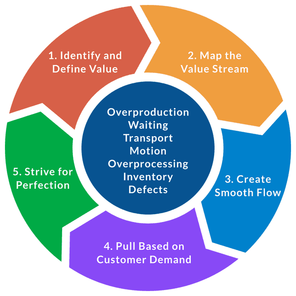

TEMA 1
REINGENIERÍA
Reingeniería es la revisión fundamental y el rediseño radical de
procesos para alcanzar mejoras espectaculares en medidas críticas y
contemporáneas de rendimiento, tales como costos, calidad, servicio y
rapidez.
¿Cómo se implementa?
La implantación de la reingeniería es un proceso que incluye tres
cosas
1. Definir objetivos y dividir proyectos en unidades manejables.
2. Reformar a la administración intermedia para convencerla de la
necesidad del cambio.
3. Adoptar las tecnologías de información como una herramienta
inherente a la empresa.
Beneficios
• Cambio positivo a procesos más eficientes.
• Comportamiento activo de las personas, que aportan ideas y
opiniones, implicándose en la evolución y mejora de los procesos.
• Cambio a procesos que precisen menos controles y verificaciones.
• Integración de trabajos, varias tareas se combinan en una sola.
• Una mejor organización del trabajo.

KAIZEN
¿Qué es Kaizen? “Kaizen significa mejora. Además, significa mejora
continua en la vida personal, la vida familiar, la vida social y la
vida laboral. Cuando se aplica en el lugar de trabajo, Kaizen
significa mejora continua que involucra a todos, gerentes y
trabajadores por igual".
El núcleo de Kaizen hay 5 principios fundamentales de Kaizen que están
incorporados en cada herramienta y en cada comportamiento. Los 5
principios son:
• Conozca a su cliente
• Déjelo fluir
• Vaya a Gemba (Gemba es el lugar más importante para un equipo,
puesto que es el lugar donde realmente sucede el trabajo)
• Capacite a las personas
• Sea transparente La implementación de esos 5 principios en cualquier
organización es fundamentalmente importante para una cultura exitosa
de Mejora Continua y para marcar un punto de inflexión en la
progresión de la calidad, la productividad y las relaciones laborales
de gestión.
TEMA 2
LEAN MANUFACTURING
Lean Manufacturing es un proceso continuo y sistemático de
identificación y eliminación de actividades que no agregan valor en un
proceso, pero si implican costo y esfuerzo. La principal filosofía en
la que se sustenta el Lean Manufacturing radica en la premisa de que
«todo puede hacerse mejor»; de tal manera que en una organización debe
existir una búsqueda continua de oportunidades de mejora.
El Lean Manufacturing permitirá a la organización:
• Minimice sus inventarios
• Minimice sus retrasos
• Minimice su espacio de trabajo
• Minimice sus costos totales
• Minimice su consumo energético
• Mejore su calidad
Existen tres principios claves para una adecuada ejecución de las
actividades Lean:
• Lean Manufacturing es un proyecto de tipo estratégico
• La estructura organizacional debe adaptarse a la metodología Lean
• Lean Manufacturing es un compromiso de todos
Fases en la implementación del Lean Manufacturing
• Fase 0. Tradicional: Preparación (1 - 3 meses)
• Fase 1. Aplicación: Áreas piloto (4 - 6 meses)
• Fase 2. Cadenas de valor: Gestión de cadenas (1 - 2 años)
• Fase 3. Organizaciones Lean: Pensamiento esbelto (Hábito permanente)


5’s
La metodología “cinco eses” se trata de un compendio de sabiduría
milenaria creado a raíz de las necesidades empresariales que aquejaron
a Japón después de la Segunda Guerra Mundial. Lo llaman las 5S, ya que
esas son las iniciales de sus cinco pilares en japonés: Seiri
(Clasificación), Seiton (Orden), Seiso (Limpieza), Seiketsu
(Estandarización) y Shitsuke (Disciplina). Es una técnica japonesa de
productividad para empresas que puede ayudar a mejorar tus negocios y
también se puede aplicar fuera de la oficina.
1ª) Clasificación – Seiri Eliminar del espacio de trabajo todo lo que
sea inútil. Consiste en identificar y clasificar los materiales
indispensables para la ejecución del proceso. De esta forma, el
trabajador dispone de las herramientas que realmente necesita y ya no
existirán otros elementos que puedan dificultar su trabajo. Se apoya
en la técnica «first in, first out» (lo primero que entra es lo
primero que sale) para evitar que los productos caduquen.
2ª) Organización – Seiton Organización del espacio de trabajo de forma
eficaz. En segundo lugar, se procede a ordenar los materiales
indispensables, facilitando las tareas de encontrar, usar y reponer
estos útiles. Con ello se consigue eliminar tiempos no productivos
asociados a la búsqueda de materiales y desplazamientos
innecesarios.
3ª) Limpieza – Seiso Mejorar el nivel de limpieza de los lugares. Es
indispensable localizar y eliminar la suciedad del puesto de trabajo,
así como su correcto mantenimiento.
4ª) Estandarizar – Seiketsu Prevenir suciedad y desorden. Normas y
Procedimientos. El proceso de estandarizar trata de distinguir
fácilmente una situación «normal» de una «anormal», es decir, el
personal debe ser capaz de discernir cuando las tres «eses» anteriores
se están aplicando correctamente y cuando no.
5ª) Seguir mejorando – Shitsuke Fomentar los esfuerzos en este
sentido. Es un ciclo que se repite continuamente y en el que se debe
de disponer de una disciplina para mantener un puesto de trabajo
ordenado y limpio.
MUDA
Muda es todo “Desperdicio” u “obstáculo”, aquello que no aporta “valor
añadido”, que no está alineado con lo que el cliente está dispuesto a
pagar
POKA-YOKES
Existen 4 tipos de poka-yoke El secuencial, el informativo, el
agrupado y el físico qué consisten en eliminar los errores en las
actividades repetitivas o en aquellos procesos donde los operarios
pueden equivocarse por desconocimiento o despiste.
KANBAN
Es un método de gestión del flujo de trabajo que ayuda a las
organizaciones a gestionar y mejorar los sistemas de trabajo.

ESTRATIFICACIÓN
La estratificación también conocida como segmentación de datos, se
define como la acción de ordenar datos, personas y objetos en
distintos grupos o estratos.
TEMA 3
DIAGRAMA DE FLUJO
Es una herramienta bastante útil para reducir la información práctica
de un proceso o alguna actividad, consta de un sistema gráfico y
sistemático que acomoda las acciones, condiciones, vertientes y
opciones del mismo para terminar con un protocolo ineludible que cubre
todas las vertientes posibles, maneja siempre un inicio y un final.
TEMA 4
DIAGRAMA DE ISHIKAWA
Es un método para encontrar la raíz de cierto problema por una
metodología gráfica en un diagrama que asemeja al esqueleto de un
pescado, consta de 6 enfoques, Personas, Materiales, Métodos,
Maquinaria, Medidas, Entorno y cada uno se desarrolla en su propia
rama tan específica o generalmente como se quiera, es un método útil
si se enfoca bien aunque hasta cierto punto abstracto.
Personas
Hace referencia a los individuos involucrados y sus posibles razones
para haber obtenido el fallo en la operación Materiales Se refiere a
los medios que se utilizaron al momento de operar que llevaron al
fallo o problema.
HOJA DE VERIFICACIÓN
Hoja de verificación en calidad,es un formulario diseñado para
recopilar datos, por lo que se usa como herramienta genérica para
iniciar un proceso de control de actividades para detectar errores y
áreas de mejora, y también para encontrar soluciones a problemas
concretos.
DIAGRAMA DE DISPERSIÓN
Este método agrupa los datos en un plano cartesiano, lo que termina en
un mapa de puntos con los cuales se forman relaciones lineales,
cuadráticas, graduales y de más, para identificar comportamientos o
causas a raíz de esos datos agrupados.
DIAGRAMA DE PARETO
Ordena datos de manera ordenada, de mayor a menor, para así tener
claridad en la información y poder hacer aseveraciones como el famoso
80-20, que el 80% de los problemas vienen del 20% de las causas.
TEMA 5
CICLO PHVA
El Ciclo de Mejora Continua PHVA, también conocido como ciclo de
Deming o Ciclo PDCA, es un proceso sencillo que puede utilizarse para
mejorar cualquier proceso o sistema. Fue desarrollado originalmente
por W. Edwards Deming, y desde entonces ha sido utilizado por empresas
y organizaciones de todo el mundo.
¿Cómo funciona?
El ciclo PHVA, es un modelo de mejora continua que se utiliza en
muchas industrias para mejorar la calidad y la eficiencia. El ciclo
consta de cuatro pasos: Planificar, Hacer, Comprobar y Actuar.
• Planificar: Consiste en establecer objetivos y elaborar un plan para
alcanzarlos.
• Hacer: Implica pasar a la acción e iniciar el proceso de cambio.
• Verificar: Consiste en supervisar los progresos y evaluar los
resultados.
• Actuar: Aquí es donde se actúa sobre la base de lo que se ha
aprendido en las etapas anteriores.
5W2H
Es un método que concentra en un formato sencillo y práctico la forma
en que se aplica la solución una vez que ya se tiene en base al
problema.
Por su significado en inglés se tienen los
siguientes apartados:
What:.........Es lo que se va a hacer
Why:..........Es porque se va a hacer, el propósito
Who:..........Es quien lo va a hacer, ya sea una persona o un
equipo
How:..........Es como o con que materiales y herramientas
How much:.....Es cuanto va a costar
When:.........Es cuando se va a hacer o el plazo esperado
Where:........Es donde se hará o el alcance de la solución

CUADROS DE MANDO INTEGRAL
El cuadro de mando integral es una manera de visualizar la solución de
un problema de manera estratégica para tener en cuenta las
implicaciones de aplicar la solución, se suele dividir en 4 y marca
los desafíos que se tienen, los obstáculos con los que se encuentran,
las herramientas con las que se cuentan y los resultados de aplicar la
estrategia planteada